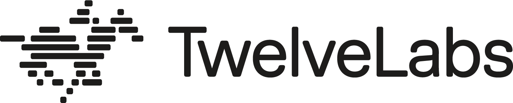
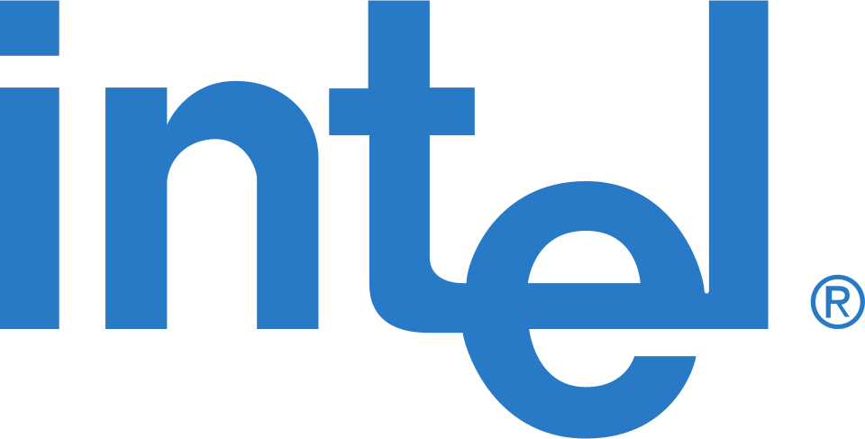

홈 > 브랜드 매거진 > Twelve Labs
Twelve Labs
Twelve Labs는 영상의 내용을 의미 단위로 검색·요약·분석하는 비디오 이해(video understanding) 멀티모달 AI 플랫폼을 개발하는 기업이다. 샌프란시스코와 서울에 거점을 두고 한국계 창업진이 이끄는 스타트업으로, Pegasus 등 영상 언어 모델을 통해 영상을 프레임의 나열이 아닌 의미적 정보로 다루는 기술을 표방한다.
산업 분야 기술·전자 · 공개 등급 편집 검수 · 브랜드 평가 4 ★

한눈에 보는 브랜드
Twelve Labs는 영상의 내용을 의미 단위로 검색·요약·분석하는 비디오 이해(video understanding) 멀티모달 AI 플랫폼을 개발하는 기업이다. 샌프란시스코와 서울에 거점을 두고 한국계 창업진이 이끄는 스타트업으로, Pegasus 등 영상 언어 모델을 통해 영상을 프레임의 나열이 아닌 의미적 정보로 다루는 기술을 표방한다.
브랜드 관점
펜타그램이 2025년 진행한 리브랜딩의 핵심 개념은 ‘볼륨으로서의 영상(video as volume)’이다. 전통적 AI가 영상을 분리된 프레임의 연속으로 보는 데 반해, 트웰브랩스는 시간을 공간적으로 인식해 영상 전체를 상호 연결된 하나의 덩어리로 다룬다는 사고를 시각 언어로 옮겼다.
로고는 19세기 동작연구의 선구자 에드워드 마이브리지의 질주하는 말 연속사진에서 출발해, 작은 사각형 모듈로 구성된 도식적 말과 기수 심벌로 재해석했다. 차갑고 기업적이거나 산만하고 장난스러운 양극단의 여느 AI 브랜드와 달리, 깊이와 정밀함에 서사와 감정을 더한 시스템 주도형이면서도 유연한 조형을 지향했다.
정보의 실(thread)이 레이아웃을 가로지르고 다이어그램이 차원을 넘나드는 영상의 흐름을 보여준다.
시작과 성장
트웰브랩스는 2021년 미국 샌프란시스코에서 이재성 대표를 포함한 한국계 공동창업자 다섯 명이 설립했다. 대표는 창업 전 대한민국 국방부 사이버작전사령부에서 리드 데이터 사이언티스트로 일한 이력이 있으며, 본사는 샌프란시스코, 아시아태평양 거점은 서울에 둔다.
멀티모달 영상 이해와 검색 기술을 핵심으로 출발해 이미지·장면·음향을 함께 해석하는 모델을 개발해 왔다. 펜타그램 파트너 조디 허드슨파월과 루크 파월이 리브랜딩을 이끌었고, 영상 데이터의 구조를 닮은 로진지(lozenge) 형태의 인터페이스와 실·타임라인 기반 레이아웃 그리드를 만들었다.
서체는 기술성과 부드러운 모서리를 겸비한 ‘밀링(Milling)’을 채택했다.
브랜드 아이덴티티
2025년 공개된 새 브랜드는 Pentagram의 파트너 Jody Hudson-Powell과 Luke Powell이 주도했다. 핵심 개념은 영상을 선형적 타임라인이 아니라 하나의 부피(volume)로 보는 'video as volume'이며, 심벌은 에드워드 마이브리지(Eadweard Muybridge)의 1878년 질주하는 말 연속사진 모션 연구를 차용한 갤러핑 호스로, 회사가 AI 모델에 말 이름을 붙여온 점과 연결된다.
시각 시스템은 프레임에서 라이브러리로 확장되는 스레드형 다이어그램과 렌즈(로젠지) 형태의 인터페이스 모티프를 활용한다. 구체적 서체명과 색상값은 공개 자료로 확인되지 않는다.
제품과 서비스
플랫폼의 두 축은 인코더 마렝고(Marengo)와 추론 모델 페가수스(Pegasus)다. 마렝고는 영상을 보고 들으며 풍부한 멀티모달 임베딩으로 압축하고, 페가수스는 그 데이터를 traversal해 사건·맥락·의도를 식별한다.
두 모델을 함께 쓰면 수백만 시간 분량의 영상에서 원하는 장면을 짧은 시간에 찾아낼 수 있다. 펜타그램은 이 작동 원리를 브랜드 중심의 다이어그램 시스템으로 시각화했다.
컬러는 LCH 색공간을 적용해 어떤 두 색을 조합해도 조화롭게 했으며, 검색은 핑크-퍼플, 생성은 오렌지-옐로, 임베드는 그린-블루로 세 핵심 기능을 색으로 구분했다.
사람들
현재 상태
타임라인
BI/CI 변천사
함께 읽을 브랜드
시스코 시스템즈(Cisco Systems)는 라우터·스위치 등 네트워킹 장비와 사이버보안·협업 솔루션을 개발하는 미국의 IT 기업이다.

기술·전자 · 편집 검수인텔인텔은 보이지 않는 부품을 소비자가 인식하는 브랜드로 만든 대표적 사례다. 컴퓨터 내부의 기술을 밖으로 끌어내어 신뢰와 성능의 이름으로 각인시킨 점이 인텔 브랜딩의...
Di
Ding
기술·전자 · 편집 검수DingDing는 2025년에 기록된 Digital Products & Services 계열의 브랜드 아이덴티티 사례입니다. Wildish & Co.가 아이덴티티 작업의 디...
 기술·전자 · 자료 기반라인
기술·전자 · 자료 기반라인라인(LINE)은 2011년 네이버 일본법인이 출시한 모바일 메신저로, 일본·대만·태국 등에서 국민 메신저로 자리 잡았다. 현재 운영사는 LY Corporation이...
 기술·전자 · 자료 기반SK텔레콤
기술·전자 · 자료 기반SK텔레콤SK텔레콤(SK Telecom)은 1984년 설립된 대한민국 최대의 이동통신 사업자로 SK그룹 계열사다.
 기술·전자 · 매거진 완성뱅앤올룹슨
기술·전자 · 매거진 완성뱅앤올룹슨뱅앤올룹슨은 오디오를 가전제품이 아니라 공간 속 오브제로 다루는 브랜드다. 소리의 품질뿐 아니라 제품이 놓이는 방식, 재료, 형태, 조작 경험까지 디자인의 일부로 통...
기술·전자 · 편집 검수Isomorphic Labs이소모픽 랩스(Isomorphic Labs)는 구글 딥마인드에서 2021년 분사한 영국 런던 본사의 AI 신약개발 기업이다. 단백질 구조 예측 모델 알파폴드(Alph...
 기술·전자 · 편집 검수미니
기술·전자 · 편집 검수미니미니는 작은 크기를 약점이 아니라 개성과 태도의 언어로 바꾼 자동차 브랜드다. 미니의 디자인은 실용성만을 말하지 않는다. 작음, 경쾌함, 도시적 감각을 결합해 차체...